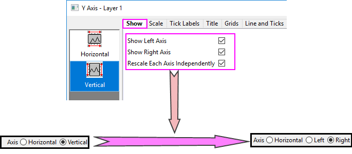

Die Registerkarte Referenzlinien
AxesRef-RefLines
Um einen spezifischen Wert oder Bereich zu identifizieren, können Sie mehrere Referenzlinien bei einem konstanten oder berechneten Wert auf der Achse hinzufügen und die Fläche zwischen den verbundenen Referenzlinien füllen.
 |
In Origin können Sie sowohl die rechte als auch die linke Y-Achse für allgemeine 2D-Diagramme anzeigen und Jede Y-Achse unabhängig neu skalieren auf der Registerkarte Zeigen aktivieren. Es gibt zwei getrennte vertikale Symbole Links und Rechts, mit denen Sie die Referenzlinien für die linke und die rechte Y-Achse separat benutzerdefiniert anpassen können.
|
Layerauswahl
Bevor Sie die Elemente der Referenzlinien benutzerdefiniert anpassen, können Sie die Layerliste verwenden, um zwischen Layern in einem Diagramm mit mehreren Layern zu wechseln.

Referenzlinien bei Wert
Eine Möglichkeit, Referenzlinien hinzuzufügen, besteht im Verwenden dieses Felds zum Eingeben einer mit Leerzeichen getrennten Liste von Werten oder im Verweisen auf eine Referenzspalte von Werten (durch Klicken auf die interaktive Schaltfläche Spalte auswählen  neben diesem Textfeld) im Arbeitsblatt.
neben diesem Textfeld) im Arbeitsblatt.
Beschriftungsformat
Sobald Sie Referenzlinien mit der Option Referenzlinien bei Wert hinzugefügt haben, wird diese Option verfügbar, damit Sie die Beschriftungen für diese Referenzlinien festlegen können. Sie haben die Möglichkeit, eine mit Leerzeichen getrennte Liste von Werten einzugeben oder auf eine Referenzspalte mit Beschriftungen im Arbeitsblatt zu verweisen (durch Klicken auf die interaktive Schaltfläche Spalte auswählen neben diesem Textfeld).
Hinweis: Diese Option ist nur verfügbar, wenn Sie Werte eingeben oder eine Spalte für die Option Referenzlinie bei Wert auswählen. Beschriftungen, die in dieser Option eingegeben oder in der ausgewählten Spalte gespeichert werden, werden als Beschriftungen für die hinzugefügten Referenzlinien verwendet (außer Achsenanfang/-ende). Bei Eingabe bzw. Auswahl einer beliebigen Beschriftung wird das Kontrollkästchen Beschriftung für die hinzugefügte Referenzlinie aktiviert und der Beschriftungstext wird auf <Auto> gesetzt.
Abwechselnd füllen
Abwechselnd füllen
- Füllen Sie die Fläche zwischen jeder Referenzlinie mit ungerader Zahl und der nächsten mit gerader Zahl, wie z. B. RLine 1 ~ RLine 2, RLine 3 ~ RLine 4.
Abwechselnd füllen, Achsenanfang und -ende einschließen
- Die Flächen werden abwechselnd gefüllt, Achsenanfang und -ende eingeschlossen. Die Füllreihenfolge ist Achsenbeginn bis RLine 1. Das Achsenende ist die letzte Füllung, wenn die benutzerdefinierte Linienanzahl gerade ist.
Daten innerhalb des Achsenskalierungsbereichs für berechnete Werte verwenden
Wenn Sie eine statistische Referenzlinie (z. B. der Mittelwert) zu einer Zeichnung hinzufügen, können Sie dieses Kontrollkästchen aktivieren, um den statistischen Wert nur für Daten innerhalb des Achsenbereichs zu berechnen. Bleibt dieses Kästchen deaktiviert, berechnet Origin die statistischen Werte des gesamten Datensatzes. Dieses Kontrollkästchen ist standardmäßig aktiviert.
Anzeigefeld für Referenzlinien
Hier werden alle Referenzlinien aufgelistet. Die Referenzlinien Achsenanfang und Achsenende werden standardmäßig oben in dieser Tabelle aufgeführt. Beachten Sie, dass Sie hier auch Linien hinzufügen können, indem Sie einen Wert in die Zelle Bei Achsenwert eingeben (siehe nächsten Abschnitt).
Bei Achsenwert
Die Position der hinzugefügten Referenzlinien wird gezeigt. Siehe diesen Tipp bezüglich der Verwendung von Bereichen mit Namen.
Linie
Legen Sie fest, ob die Referenzlinie bei dem aktuellen Achsenwert gezeigt werden soll.
Füllen in
Wählen Sie eine Referenzlinie in der Auswahlliste, bis zu der die aktuelle Referenzlinie gefüllt werden sollte. Wenn Sie eine der obigen Kontrollkästchen für Abwechselnd füllen aktiviert haben, zeigt diese Spalte die verbundenen Linien und ist nicht zu bearbeiten.
|
Bei Polardiagrammen gibt es zum Füllen des inneren Kreises im Zentrum eine zusätzliche Option für die polare Referenzlinie.
- Wenn die Referenzlinie der Achsenanfang ist und Sie Füllen bis = Achsenanfang auswählen, wird vom Zentrum des Kreises bis zur Linie des Achsenanfangs gefüllt.
- Wenn die Referenzlinie das Achsenende ist und Sie Füllen bis = Achsenende auswählen, wird vom Zentrum des Kreises bis zur Linie des Achsenendes gefüllt.
Referenzlinie Achsenanfang, bis Achsenanfang füllen
(gelber Bereich) |
Referenzlinie Achsenanfang, bis Achsenanfang füllen
(gelber Bereich) |
 |
 |
|
Beschriftung
Legen Sie fest, ob die Beschriftung für die Referenzlinie gezeigt werden soll.
Beschriftungsposition
Legen Sie die Position der Beschriftungen fest. Für beide Linien, horizontal und vertikal, sind Anfang, Mitte oben, Mitte, Mitte unten und Ende mögliche Positionen der Referenzlinien.
Beschriftungstext
Legen Sie fest, was für jede Referenzlinie als Beschriftung gezeigt werden soll.
- Die Standardeinstellung ist <Wert wie eingegeben>. Dies bedeutet, dass die Position des Achsenwerts als Beschriftung für die aktuelle Referenzlinie gezeigt wird.
- Wählen Sie <Auto>, um den Formateinstellungen der Hilfsstrichsbeschriftungen auf der Registerkarte Beschriftung der Hilfsstriche im Dialog Achsen zu folgen (Typ, Anzeige, Dezimalstellen festlegen, Anzahl der Dezimalstellen).
- Sie können auch eine benutzerdefinierte Zeichenkette mit der Formel $(v, Formats) eingeben, wobei v der Positionswert und Formats die unter Origin-Formate beschriebene Syntax ist. Es gibt zwei spezielle Fälle:
$(v,D99) // v = Julian-Day value in the form "MM/dd/yyyy hh:mm:ss" when Tick Label Type=Date $(v,T99) // v = Julian-Day value in the form "DDD:hh:mm:ss" when Tick Label Type=Time
- Um einen Umbruch/Zeilenvorschub in Ihre Beschriftung einzufügen, drücken Sie Strg + Enter (dies fügt die Zeichen %(CRLF) ein).
Standardmäßig hat das Beschriftungsobjekt die folgenden Eigenschaften:
- Eine Beschriftung wird oberhalb der Referenzlinie positioniert, kann aber in der Mitte oder auch unten angezeigt werden.
- Ein Name, der auf der Registerkarte Programmierung des Dialogs Eigenschaften angezeigt wird. Dieser Name ist RL(X/Y)#, wobei "X" oder "Y" die Achse identifiziert und "#" die Nummer ist, mit der die Linie in der Liste Referenzlisten erscheint (z. B. wäre RLX3 die dritte Referenzlinie in der mit der X-Achse verbundenen Liste).
- Angehängt an das Diagramm nach Layer und Skalierungen.
- Eine Verknüpfung mit (%, $), Substitutionsebene von 1; dies bedeutet, dass das Objekt dynamisch mit einem Variablenwert v verknüpft ist.
Schaltfläche
Es gibt drei Schaltflächen unter dem Anzeigefeld:
| Einfügen |
Fügen Sie eine neue Referenzlinie vor derjenigen ein, die Sie im Anzeigefeld ausgewählt haben. |
| Löschen |
Löschen Sie eine oder mehrere Referenzlinien, die im Anzeigefeld ausgewählt sind. (Das heißt, andere Referenzlinien als die für Achsenanfang und Achsenende). Zu Auswählen mehrerer Linien halten Sie die Strg-Taste gedrückt und klicken einzeln auf die Einträge der Referenzlinien. |
| Details |
Öffnen Sie den Dialog Referenzlinien zur weiteren benutzerdefinierten Anpassung des Stils der Referenzlinien. |
| Hinweis: Um die Schaltflächen Einfügen und Löschen zu aktivieren, sollten Sie zuerst Referenzlinien bei Wert deaktivieren. |
Detailsdialog für Referenzlinien
Dieser Dialog kann durch Klicken auf die Schaltfläche Details auf der Registerkarte Referenzlinien im Dialog Achsen geöffnet werden. Verwenden Sie den Dialog Referenzlinien, um Linien hinzuzufügen, den Wertetyp festzulegen (z. B. Statistik) und Formate und Stile von jeder Referenzlinie benutzerdefiniert anzupassen.
|
Wenn dieser Dialog geöffnet ist, wird der Hauptdialog Achsen verborgen. Sie können auf die Schaltfläche Anwenden klicken, um die Änderung nur in diesem Dialog anzuwenden, ohne zum Hauptdialog Achsen zurückzukehren. Wenn Sie auf OK klicken, um die Einstellungen zu speichern (oder auf Abbrechen klicken) und diesen Dialog schließen, wird der Dialog Achsen wieder sichtbar.
|
Achsenauswahl
Sie können eine Achse in der oberen rechten Ecke wählen, um Referenzlinien auf verschiedenen Achsen benutzerdefiniert anzupassen.
Wenn Sie Linke Achse und Rechte Achse gewählt haben und das Kontrollkästchen Jede Achse unabhängig neu skalieren auf der Registerkarte Zeigen aktiviert ist, wird die vertikale Achse in zwei Optionen, Rechts und Links aufgeteilt, damit Sie die Unterbrechungen auf den zwei Y-Achsen unabhängig voneinander benutzerdefiniert anpassen können.

Wertetyp
Wählen Sie den Wertetyp, den die Referenzlinie festlegt. Dieses Bearbeitungsfeld wird nur für benutzerdefinierte Referenzlinien angezeigt (ausschließlich Achsenanfang und Achsenende).
|
Seit Origin 2022b können Sie einen Bereich mit Namen im Feld Bei Achsenwert verwenden, wenn Werttyp = Wert oder Ausdruck (z. B. als Teil eines Ausdrucks).
Außerdem beachten Sie, dass der Bereich mit Namen beim Hinzufügen von Referenzlinien die Einstellung Umfang = Projekt aufweisen muss, auch in Datenzeichnungen aus dem Arbeitsblatt, in dem der Bereich mit Namen definiert ist (Datenzeilen oder Beschriftungszeilen).
|
| Wert |
Fügen Sie eine Referenzlinie bei einem konstanten Wert auf der Achse hinzu. |
| Ausdruck |
Fügen Sie eine Referenzlinie hinzu, die durch eine Kurvenformel oder bei einem Wert, der mittels eines Ausdrucks berechnet wurde, erzeugt wurde. |
| Statistik |
Fügen Sie eine Referenzlinie bei einem statistischen Wert hinzu. |
|
Beachten Sie, dass Sie eine Schaltfläche der Minisymbolleiste verwenden können, um Statistische Referenzlinien hinzuzufügen und zwar zu Linien-, Punkt-, Punkt-Linien-, Säulen-/Balken- und Boxdiagrammen:
- Klicken Sie in den Layer, um den Layer auszuwählen.
- Klicken Sie auf die Schaltfläche Statistische Referenzlinien hinzufügen, um aus einer Liste der wichtigsten Statistikkennwerte auszuwählen.
- Klicken Sie auf Mehr, um ggf. den Dialog Referenzlinien zu öffnen.
|
Bei Achsenwert
Legen Sie die Position fest, an der die Referenzlinie hinzugefügt werden soll. Dieses Bearbeitungsfeld wird nur für benutzerdefinierte Referenzlinien angezeigt (d. h. Steuerung nicht verfügbar für Achsenanfang und Achsenende).
| Für Wert |
Geben Sie einen konstanten Wert oder Bereich mit Namen ein. Hinsichtlich des Bereich mit Namen siehe den Tipp oben unter Werttyp. |
| Für Ausdruck |
Geben Sie einen LabTalk-Ausdruck ein. Origin bietet viele Standardfunktionen zum Erzeugen des Ausdrucks. Sie können auf das Ausklappmenü neben dem Bearbeitungsfeld klicken. Wählen Sie eine Funktion und fügen Sie sie in das Bearbeitungsfeld ein.
Beachten Sie, dass Ihr Ausdruck auch einen Bereich mit Namen enthalten kann. Siehe Tipp unter Werttyp oben.
Hinweis: Die Buchstaben x und y sind die reservierten Variablen, die sich auf die aktuelle X- bzw. Y-Achse beziehen. Wenn Sie eine Linie Y = X + 1 zum Diagramm hinzufügen möchten, können Sie direkt “X + 1” im Bearbeitungsfeld Bei Achsenwert eingeben. |
| Für Statistik |
Geben Sie einen Ausdruck ein, der eine von Origins statistischen Standardfunktionen enthält. Sie können auf das Ausklappmenü neben dem Bearbeitungsfeld klicken. Wählen Sie dann eine Statistik und fügen Sie sie in das Bearbeitungsfeld ein.

Siehe die folgende Erläuterung der statistischen Syntax.
Hinweis:
- Um die Statistikwerte des Diagramms zu ermitteln, verschachteln wir die Funktion plotdata() innerhalb einer statistischen Funktion. Zum Beispiel:
-
Min(plotdata(1,Y)); //The minimum value of the first plot’s Y data
- Im Trellis-Diagramm erhalten wir die Statistikwerte von jedem Feld durch Verschachteln von zum Beispiel plotdata(index, designation, h,v),
-
Min(plotdata(1, Y, h, v)); //The minimum value of the first plot’s Y data for every panel
Beachten Sie, dass seit Origin 2021b die Schaltfläche Statistische Referenzlinien hinzuzufügen der Minisymbolleiste auf Layerebene automatisch die Syntax für jedes Feld handhabt und zwar für Diagrammtypen wie Trellis, bei denen "Feld" aktiviert ist (Registerkarte Feld auf Zeichnungsebene im Dialog Details Zeichnung).
-

Entsprechend ermitteln wir die Statistikwerte für alle horizontalen Felder aus allen Feldzeilen mit plotdata(index, designation, *,v) bzw. plotdata(index, designation, h,*) für alle vertikalen Felder aus jeder Feldspalte. Das Verschachteln von plotdata(index, designation) in einer statistischen Funktion besteht darin, Statistikwerte für alle Daten dieses Trellis-Diagramms ohne Berücksichtigung der Felder zu ermitteln, zum Beispiel
-
Min(plotdata(1, Y)); //The minimum value of all the first plot’s Y data in this trellis plot
- Manchmal werden die Felder in einer anderen Reihenfolge angeordnet, z. B. durch Umbrechen von Feldern, Austauschen von XY, Umkehren der Achsen. Um den wirklichen Feldindex festzustellen, zeigt Origin die Beschriftungen des Feldindexes im Trellis-Diagramm, wenn Sie die Registerkarte Referenzlinien im Dialog Achsen aktivieren.
|
Statistische Referenzlinien sind dynamisch und werden bei Änderungen an den unterstützenden Daten neu berechnet und neu gezeichnet, z. B. wenn Sie einen Datenfilter hinzufügen, den Datenbereich ändern oder Datenzeichnungen mit der Objektverwaltung verbergen bzw. zeigen.
|
|
| Hinweis: Abgesehen von der Formel, die die Variablen X und Y enthält, sollten wir eine einzelnen Wert im Bearbeitungsfeld bei Achsenwert festlegen. Für den Datensatz wird nur das erste Element berücksichtigt. Die Referenzlinie wird z. B. nur bei x/y = sin(1) gezeigt, wenn wir “sin(data(1,32))” im Bearbeitungsfeld Bei Achsenwert eingeben. |
Im Feld zeigen
Legen Sie fest, in welchem Feld die Referenzlinie gezeigt wird. Diese Option ist nur für Trellis-Diagramme verfügbar. Verwenden Sie die Kommas, um den Feldindex zu teilen.
Linie
Das Kontrollkästchen Zeigen ist konsistent mit dem Kontrollkästchen Linie in der Tabelle Anzeige. Sie können es verwenden, um die Referenzlinie zu zeigen oder zu verbergen.
Wenn Sie das Kontrollkästchen Autom. Format deaktivieren, können Sie Farbe, Stil und Dicke der aktuellen Referenzlinie benutzerdefiniert anpassen.
Als Standardlinienstil festlegen
Wenn Sie die Formate für eine Referenzlinie gesetzt haben, können Sie den aktuellen Linienstil als Standard festlegen. Beim nächsten Mal, wenn Sie eine neue Referenzlinie hinzufügen, wird dieser Standardlinienstil angewendet.
Es gibt zwei Methoden, um das zu tun:
- Klicken Sie in diesem Dialog Referenzlinien mit der rechten Maus auf die Referenzlinie mit dem gewünschten Stil, um Als Standardlinienstil festlegen im Kontextmenü auszuwählen.
- Kehren Sie zurück zum Diagramm und klicken Sie mit der rechten Maus auf die Referenzlinie mit dem gewünschten Stil, um Als Standardlinienstil festlegen im Kontextmenü auszuwählen.
Muster
Passen Sie das Füllmuster zwischen den verbundenen Referenzlinien benutzerdefiniert an.
Wählen Sie Füllen bis Linie(n) in der Auswahlliste. Diese Einstellung entspricht der Option Füllen in in der Tabelle Anzeige. Wenn das Kontrollkästchen Abwechselnd füllen aktiviert ist, wird diese Auswahlliste abgeblendet (nicht verfügbar).
- Passen Sie Füllen bis für die ausgewählte Linie mit Hilfe der Optionen Farbe und Transparenz nach Bedarf an.
- Seit Origin 2020b ist es möglich, zu beiden Seiten einer gegebenen Referenzlinie zu füllen (in vorherigen Versionen konnte die Füllfarbe nur auf eine Seite einer Linie angewendet werden).
-

- Vor Origin 2020b wurden Füllungen von Referenzlinien in numerischer Reihenfolge gezeichnet (niedrige Zahlen auf der Achsenskalierung werden zuerst gezeichnet), aber seit 2020b werden sie in der Reihenfolge gezeichnet, die in der Tabelle Referenzlinien aufgeführt ist. Diese Änderung könnte beispielsweise eine Farbunterschied der sich überschneidenden Füllmuster erzeugen (d. h., die Farbe, die vorher im Hintergrund war, könnte nun in den Vordergrund gezogen worden sein). Damit Origin 2020b und neuere Versionen das alte Zeichenverhalten verwenden, setzen Sie @ARLS = 1.
| Hinweis: Sie können den Stil einer Referenzlinie einfach für andere kopieren, indem Sie die Funktionen Format kopieren und Format einfügen in diesem Dialog verwenden. Klicken Sie mit der rechten Maustaste auf eine Referenzlinie im linken Bedienfeld Referenzlinien bei und wählen Sie Format kopieren. Wählen Sie dann die Zielreferenzlinie(n) und klicken Sie mit der rechten Maustaste, um Format einfügen auszuwählen. Außerdem haben Sie die Möglichkeit, Duplizieren im Kontextmenü auszuwählen, um eine neue Referenzlinie mit dem gleichen Stil zu erstellen. |
Beschriftung
Passen Sie die Beschriftung der Referenzlinie benutzerdefiniert an.
| Zeigen |
Legen Sie fest, ob die Beschriftung der Referenzlinie gezeigt werden soll. |
| Text |
Legen Sie fest, was für die Referenzlinie als Beschriftung gezeigt werden soll. In dem oben erwähnten Abschnitt finden Sie viele Erläuterungen. |
| Beschriftungsformat |
Legen Sie fest, welches Beschriftungsformat für die Referenzlinie gezeigt werden soll. Es wird nur für statistische Referenzlinien angezeigt.
- Wert: Der Statistikwert wird als Beschriftung angezeigt.
- Menge: Die Menge wird als Beschriftung angezeigt.
- Beide: Sowohl Statistikwert als auch Menge werden als Beschriftung im Format Menge = Statistikwert angezeigt.
- Benutzerdefiniert: Es wird eine benutzerdefinierte Textbeschriftung gezeigt.
|
| Identität der Zeichnung |
Legen Sie fest, welcher Name in der Beschriftung gezeigt wird, um die Zeichnung zu identifizieren. |
| Position |
Legen Sie die Position der Beschriftungen fest. |